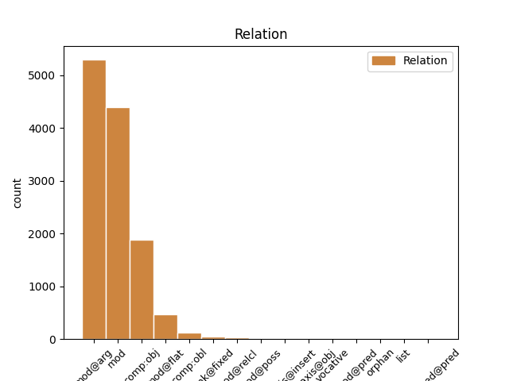
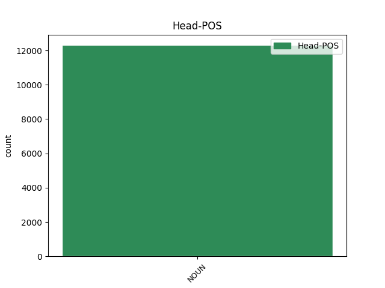
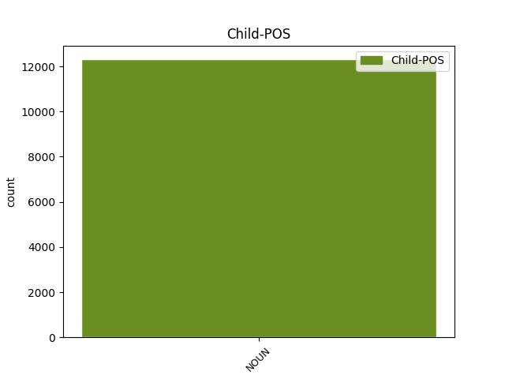

Distribution of features within this leaf



Agreement Rules sorted by frequency.
- When the dependent token is the modifer(mod@arg) of the head token, and the head token is NOUN and the dependent token is NOUN.
1 Zachowamy _ _ _ _ 0 _ _ _
2 szeroką _ _ _ _ 0 _ _ _
3 definicję _ _ _ _ 0 _ _ _
4 , _ _ _ _ 0 _ _ _
5 ale _ _ _ _ 0 _ _ _
6 ograniczymy _ _ _ _ 0 _ _ _
7 swobodę swoboda NOUN subst:sg:acc:f Case=Acc|Gender=Fem|Number=Sing 0 _ _ _
8 odmowy odmowa NOUN subst:sg:gen:f Case=Gen|Gender=Fem|Number=Sing 7 mod@arg _ _
9 udostępniania _ _ _ _ 0 _ _ _
10 dokumentów _ _ _ _ 0 _ _ _
11 . _ _ _ _ 0 _ _ _
1 Niniejsza _ _ _ _ 0 _ _ _
2 Umowa _ _ _ _ 0 _ _ _
3 wchodzi _ _ _ _ 0 _ _ _
4 w _ _ _ _ 0 _ _ _
5 życie _ _ _ _ 0 _ _ _
6 pierwszego _ _ _ _ 0 _ _ _
7 dnia dzień NOUN subst:sg:gen:m3 Animacy=Inan|Case=Gen|Gender=Masc|Number=Sing 0 _ _ _
8 miesiąca miesiąc NOUN subst:sg:gen:m3 Animacy=Inan|Case=Gen|Gender=Masc|Number=Sing 7 mod _ _
9 następującego _ _ _ _ 0 _ _ _
10 po _ _ _ _ 0 _ _ _
11 dniu _ _ _ _ 0 _ _ _
12 , _ _ _ _ 0 _ _ _
13 w _ _ _ _ 0 _ _ _
14 którym _ _ _ _ 0 _ _ _
15 Umawiające _ _ _ _ 0 _ _ _
16 się _ _ _ _ 0 _ _ _
17 Strony _ _ _ _ 0 _ _ _
18 notyfikują _ _ _ _ 0 _ _ _
19 wzajemnie _ _ _ _ 0 _ _ _
20 o _ _ _ _ 0 _ _ _
21 zakończeniu _ _ _ _ 0 _ _ _
22 procedur _ _ _ _ 0 _ _ _
23 niezbędnych _ _ _ _ 0 _ _ _
24 do _ _ _ _ 0 _ _ _
25 tego _ _ _ _ 0 _ _ _
26 celu _ _ _ _ 0 _ _ _
27 . _ _ _ _ 0 _ _ _
1 Takie _ _ _ _ 0 _ _ _
2 połączenie _ _ _ _ 0 _ _ _
3 leków _ _ _ _ 0 _ _ _
4 może _ _ _ _ 0 _ _ _
5 powodować _ _ _ _ 0 _ _ _
6 wzrost _ _ _ _ 0 _ _ _
7 stężenia _ _ _ _ 0 _ _ _
8 karbamazepiny _ _ _ _ 0 _ _ _
9 w _ _ _ _ 0 _ _ _
10 osoczu _ _ _ _ 0 _ _ _
11 i _ _ _ _ 0 _ _ _
12 zmniejszenie zmniejszyć NOUN ger:sg:acc:n:perf:aff Aspect=Perf|Case=Acc|Gender=Neut|Number=Sing|Polarity=Pos|VerbForm=Vnoun 0 _ _ _
13 stężenia stężenie NOUN subst:sg:gen:n:ncol Case=Gen|Gender=Neut|Number=Sing 12 comp:obj _ _
14 lanzoprazolu _ _ _ _ 0 _ _ _
15 . _ _ _ _ 0 _ _ _
1 uwzględniając _ _ _ _ 0 _ _ _
2 Traktat _ _ _ _ 0 _ _ _
3 dotyczący _ _ _ _ 0 _ _ _
4 przyłączenia _ _ _ _ 0 _ _ _
5 Republiki _ _ _ _ 0 _ _ _
6 Grecji _ _ _ _ 0 _ _ _
7 do _ _ _ _ 0 _ _ _
8 Wspólnoty _ _ _ _ 0 _ _ _
9 Europejskiej _ _ _ _ 0 _ _ _
10 oraz _ _ _ _ 0 _ _ _
11 do _ _ _ _ 0 _ _ _
12 Europejskiej _ _ _ _ 0 _ _ _
13 Wspólnoty wspólnota NOUN subst:sg:gen:f Case=Gen|Gender=Fem|Number=Sing 0 _ _ _
14 Energii energia NOUN subst:sg:gen:f Case=Gen|Gender=Fem|Number=Sing 13 mod@flat _ _
15 Atomowej _ _ _ _ 0 _ _ _
16 [ _ _ _ _ 0 _ _ _
17 1 _ _ _ _ 0 _ _ _
18 ] _ _ _ _ 0 _ _ _
19 , _ _ _ _ 0 _ _ _
20 podpisany _ _ _ _ 0 _ _ _
21 dnia _ _ _ _ 0 _ _ _
22 28 _ _ _ _ 0 _ _ _
23 maja _ _ _ _ 0 _ _ _
24 1979 _ _ _ _ 0 _ _ _
25 r _ _ _ _ 0 _ _ _
26 . _ _ _ _ 0 _ _ _
27 , _ _ _ _ 0 _ _ _
28 w _ _ _ _ 0 _ _ _
29 szczególności _ _ _ _ 0 _ _ _
30 jego _ _ _ _ 0 _ _ _
31 art _ _ _ _ 0 _ _ _
32 . _ _ _ _ 0 _ _ _
33 146 _ _ _ _ 0 _ _ _
34 dołączonego _ _ _ _ 0 _ _ _
35 do _ _ _ _ 0 _ _ _
36 niego _ _ _ _ 0 _ _ _
37 Aktu _ _ _ _ 0 _ _ _
38 , _ _ _ _ 0 _ _ _
1 Pani _ _ _ _ 0 _ _ _
2 sałatka _ _ _ _ 0 _ _ _
3 . _ _ _ _ 0 _ _ _
4 . _ _ _ _ 0 _ _ _
5 . _ _ _ _ 0 _ _ _
6 bon bon NOUN subst:sg:nom:n:ncol Case=Nom|Gender=Neut|Number=Sing 0 _ _ _
7 appetit appetit NOUN subst:sg:nom:n:ncol Case=Nom|Gender=Neut|Number=Sing 6 unk@fixed _ SpaceAfter=No
8 . _ _ _ _ 0 _ _ _
1 W _ _ _ _ 0 _ _ _
2 sprawach _ _ _ _ 0 _ _ _
3 bezpieczeństwa _ _ _ _ 0 _ _ _
4 i _ _ _ _ 0 _ _ _
5 zapobiegania zapobiegać NOUN ger:sg:gen:n:imperf:aff Aspect=Imp|Case=Gen|Gender=Neut|Number=Sing|Polarity=Pos|VerbForm=Vnoun 0 _ _ _
6 zanieczyszczeniom zanieczyszczenie NOUN subst:pl:dat:n:ncol Case=Dat|Gender=Neut|Number=Plur 5 comp:obl _ _
7 o _ _ _ _ 0 _ _ _
8 końcowym _ _ _ _ 0 _ _ _
9 rezultacie _ _ _ _ 0 _ _ _
10 decyduje _ _ _ _ 0 _ _ _
11 zaangażowanie _ _ _ _ 0 _ _ _
12 , _ _ _ _ 0 _ _ _
13 kompetencja _ _ _ _ 0 _ _ _
14 , _ _ _ _ 0 _ _ _
15 postawy _ _ _ _ 0 _ _ _
16 i _ _ _ _ 0 _ _ _
17 motywacje _ _ _ _ 0 _ _ _
18 jednostek _ _ _ _ 0 _ _ _
19 na _ _ _ _ 0 _ _ _
20 wszystkich _ _ _ _ 0 _ _ _
21 szczeblach _ _ _ _ 0 _ _ _
22 zarządzania _ _ _ _ 0 _ _ _
23 . _ _ _ _ 0 _ _ _
1 Zastosowanie _ _ _ _ 0 _ _ _
2 metody metoda NOUN subst:sg:gen:f Case=Gen|Gender=Fem|Number=Sing 0 _ _ _
3 obliczeniowej _ _ _ _ 0 _ _ _
4 , _ _ _ _ 0 _ _ _
5 o _ _ _ _ 0 _ _ _
6 której _ _ _ _ 0 _ _ _
7 mowa mowa NOUN subst:sg:nom:f Case=Nom|Gender=Fem|Number=Sing 2 mod@relcl _ _
8 w _ _ _ _ 0 _ _ _
9 motywie _ _ _ _ 0 _ _ _
10 5 _ _ _ _ 0 _ _ _
11 , _ _ _ _ 0 _ _ _
12 nie _ _ _ _ 0 _ _ _
13 ma _ _ _ _ 0 _ _ _
14 wpływu _ _ _ _ 0 _ _ _
15 na _ _ _ _ 0 _ _ _
16 kwotę _ _ _ _ 0 _ _ _
17 opłaty _ _ _ _ 0 _ _ _
18 podstawowej _ _ _ _ 0 _ _ _
19 i _ _ _ _ 0 _ _ _
20 opłaty _ _ _ _ 0 _ _ _
21 B _ _ _ _ 0 _ _ _
22 w _ _ _ _ 0 _ _ _
23 odniesieniu _ _ _ _ 0 _ _ _
24 do _ _ _ _ 0 _ _ _
25 wymienionego _ _ _ _ 0 _ _ _
26 roku _ _ _ _ 0 _ _ _
27 gospodarczego _ _ _ _ 0 _ _ _
28 . _ _ _ _ 0 _ _ _
1 Sprawą _ _ _ _ 0 _ _ _
2 szczególnie _ _ _ _ 0 _ _ _
3 bliską _ _ _ _ 0 _ _ _
4 memu _ _ _ _ 0 _ _ _
5 sercu _ _ _ _ 0 _ _ _
6 jest _ _ _ _ 0 _ _ _
7 decentralizacja _ _ _ _ 0 _ _ _
8 – _ _ _ _ 0 _ _ _
9 innymi _ _ _ _ 0 _ _ _
10 słowy słowo NOUN subst:pl:inst:n:ncol Case=Ins|Gender=Neut|Number=Plur 12 parataxis@insert _ SpaceAfter=No
11 , _ _ _ _ 0 _ _ _
12 podejmowanie podejmować NOUN ger:sg:nom:n:imperf:aff Aspect=Imp|Case=Nom|Gender=Neut|Number=Sing|Polarity=Pos|VerbForm=Vnoun 0 _ _ _
13 decyzji _ _ _ _ 0 _ _ _
14 politycznych _ _ _ _ 0 _ _ _
15 możliwie _ _ _ _ 0 _ _ _
16 blisko _ _ _ _ 0 _ _ _
17 obywateli _ _ _ _ 0 _ _ _
18 . _ _ _ _ 0 _ _ _
1 Z _ _ _ _ 0 _ _ _
2 oddali _ _ _ _ 0 _ _ _
3 słychać _ _ _ _ 0 _ _ _
4 było _ _ _ _ 0 _ _ _
5 nosowe _ _ _ _ 0 _ _ _
6 dźwięki _ _ _ _ 0 _ _ _
7 harmonii _ _ _ _ 0 _ _ _
8 , _ _ _ _ 0 _ _ _
9 a _ _ _ _ 0 _ _ _
10 raz raz NOUN subst:sg:acc:m3 Animacy=Inan|Case=Acc|Gender=Masc|Number=Sing 15 orphan _ _
11 po _ _ _ _ 0 _ _ _
12 raz _ _ _ _ 0 _ _ _
13 - _ _ _ _ 0 _ _ _
14 krzykliwy _ _ _ _ 0 _ _ _
15 śpiew śpiew NOUN subst:sg:acc:m3 Animacy=Inan|Case=Acc|Gender=Masc|Number=Sing 0 _ _ _
16 chłopskich _ _ _ _ 0 _ _ _
17 dzieci _ _ _ _ 0 _ _ _
18 , _ _ _ _ 0 _ _ _
19 powtarzających _ _ _ _ 0 _ _ _
20 jedynie _ _ _ _ 0 _ _ _
21 - _ _ _ _ 0 _ _ _
22 o-da-da-da _ _ _ _ 0 _ _ _
23 . _ _ _ _ 0 _ _ _
1 – _ _ _ _ 0 _ _ _
2 Nie _ _ _ _ 0 _ _ _
3 wariatka wariatka NOUN subst:sg:nom:f Case=Nom|Gender=Fem|Number=Sing 0 _ _ _
4 , _ _ _ _ 0 _ _ _
5 pani pani NOUN subst:sg:voc:f Case=Voc|Gender=Fem|Number=Sing 3 vocative _ _
6 Zosiu _ _ _ _ 0 _ _ _
7 , _ _ _ _ 0 _ _ _
8 tylko _ _ _ _ 0 _ _ _
9 chore _ _ _ _ 0 _ _ _
10 , _ _ _ _ 0 _ _ _
11 znerwicowane _ _ _ _ 0 _ _ _
12 dziecko _ _ _ _ 0 _ _ _
13 – _ _ _ _ 0 _ _ _
14 zaprotestowała _ _ _ _ 0 _ _ _
15 Becowa _ _ _ _ 0 _ _ _
16 . _ _ _ _ 0 _ _ _
1 Opis opis NOUN subst:sg:nom:m3 Animacy=Inan|Case=Nom|Gender=Masc|Number=Sing 0 _ _ _
2 : _ _ _ _ 0 _ _ _
3 wzór wzór NOUN subst:sg:nom:m3 Animacy=Inan|Case=Nom|Gender=Masc|Number=Sing 1 parataxis@obj _ _
4 na _ _ _ _ 0 _ _ _
5 fioletowym _ _ _ _ 0 _ _ _
6 i _ _ _ _ 0 _ _ _
7 szarym _ _ _ _ 0 _ _ _
8 papierze _ _ _ _ 0 _ _ _
9 , _ _ _ _ 0 _ _ _
10 pokryty _ _ _ _ 0 _ _ _
11 plastikiem _ _ _ _ 0 _ _ _
12 , _ _ _ _ 0 _ _ _
13 dwie _ _ _ _ 0 _ _ _
14 strony _ _ _ _ 0 _ _ _
15 . _ _ _ _ 0 _ _ _
1 Sekcja sekcja NOUN subst:sg:nom:f Case=Nom|Gender=Fem|Number=Sing 5 list _ _
2 2 _ _ _ _ 0 _ _ _
3 – _ _ _ _ 0 _ _ _
4 Pozostałe _ _ _ _ 0 _ _ _
5 służby służba NOUN subst:pl:nom:f Case=Nom|Gender=Fem|Number=Plur 0 _ _ _
6 Trybunału _ _ _ _ 0 _ _ _
7 ( _ _ _ _ 0 _ _ _
8 art _ _ _ _ 0 _ _ _
9 . _ _ _ _ 0 _ _ _
10 20 _ _ _ _ 0 _ _ _
11 – _ _ _ _ 0 _ _ _
12 23 _ _ _ _ 0 _ _ _
13 ) _ _ _ _ 0 _ _ _
Disagree Examples:
1 Dwie _ _ _ _ 0 _ _ _
2 dziewczynki _ _ _ _ 0 _ _ _
3 bawią _ _ _ _ 0 _ _ _
4 się _ _ _ _ 0 _ _ _
5 na _ _ _ _ 0 _ _ _
6 placu plac NOUN subst:sg:loc:m3 Animacy=Inan|Case=Loc|Gender=Masc|Number=Sing 0 _ _ _
7 zabaw zabawa NOUN subst:pl:gen:f Case=Gen|Gender=Fem|Number=Plur 6 mod _ SpaceAfter=No
8 . _ _ _ _ 0 _ _ _
1 Człowiek _ _ _ _ 0 _ _ _
2 z _ _ _ _ 0 _ _ _
3 bosymi _ _ _ _ 0 _ _ _
4 stopami _ _ _ _ 0 _ _ _
5 siedzi _ _ _ _ 0 _ _ _
6 na _ _ _ _ 0 _ _ _
7 chodniku _ _ _ _ 0 _ _ _
8 pod _ _ _ _ 0 _ _ _
9 parasolem _ _ _ _ 0 _ _ _
10 oparty _ _ _ _ 0 _ _ _
11 o _ _ _ _ 0 _ _ _
12 ścianę ściana NOUN subst:sg:acc:f Case=Acc|Gender=Fem|Number=Sing 0 _ _ _
13 budynku budynek NOUN subst:sg:gen:m3 Animacy=Inan|Case=Gen|Gender=Masc|Number=Sing 12 mod _ SpaceAfter=No
14 . _ _ _ _ 0 _ _ _
1 Pies _ _ _ _ 0 _ _ _
2 przechodzi _ _ _ _ 0 _ _ _
3 nad _ _ _ _ 0 _ _ _
4 wodą _ _ _ _ 0 _ _ _
5 po _ _ _ _ 0 _ _ _
6 pniu pień NOUN subst:sg:loc:m3 Animacy=Inan|Case=Loc|Gender=Masc|Number=Sing 0 _ _ _
7 drzewa drzewo NOUN subst:sg:gen:n:ncol Case=Gen|Gender=Neut|Number=Sing 6 mod _ SpaceAfter=No
8 . _ _ _ _ 0 _ _ _
1 Szary _ _ _ _ 0 _ _ _
2 ptak _ _ _ _ 0 _ _ _
3 z _ _ _ _ 0 _ _ _
4 krótkim _ _ _ _ 0 _ _ _
5 dziobem _ _ _ _ 0 _ _ _
6 siedzi _ _ _ _ 0 _ _ _
7 na _ _ _ _ 0 _ _ _
8 gałęzi gałąź NOUN subst:sg:loc:f Case=Loc|Gender=Fem|Number=Sing 0 _ _ _
9 bezlistnego _ _ _ _ 0 _ _ _
10 drzewa drzewo NOUN subst:sg:gen:n:ncol Case=Gen|Gender=Neut|Number=Sing 8 mod _ SpaceAfter=No
11 . _ _ _ _ 0 _ _ _
1 Człowiek _ _ _ _ 0 _ _ _
2 w _ _ _ _ 0 _ _ _
3 kasku _ _ _ _ 0 _ _ _
4 i _ _ _ _ 0 _ _ _
5 kombinezonie _ _ _ _ 0 _ _ _
6 jedzie _ _ _ _ 0 _ _ _
7 na _ _ _ _ 0 _ _ _
8 tylnym _ _ _ _ 0 _ _ _
9 kole koło NOUN subst:sg:loc:n:ncol Case=Loc|Gender=Neut|Number=Sing 0 _ _ _
10 żółtego _ _ _ _ 0 _ _ _
11 motocykla motocykl NOUN subst:sg:gen:m3 Animacy=Inan|Case=Gen|Gender=Masc|Number=Sing 9 mod _ SpaceAfter=No
12 , _ _ _ _ 0 _ _ _
13 a _ _ _ _ 0 _ _ _
14 za _ _ _ _ 0 _ _ _
15 nim _ _ _ _ 0 _ _ _
16 jedzie _ _ _ _ 0 _ _ _
17 na _ _ _ _ 0 _ _ _
18 motorze _ _ _ _ 0 _ _ _
19 druga _ _ _ _ 0 _ _ _
20 osoba _ _ _ _ 0 _ _ _
21 . _ _ _ _ 0 _ _ _